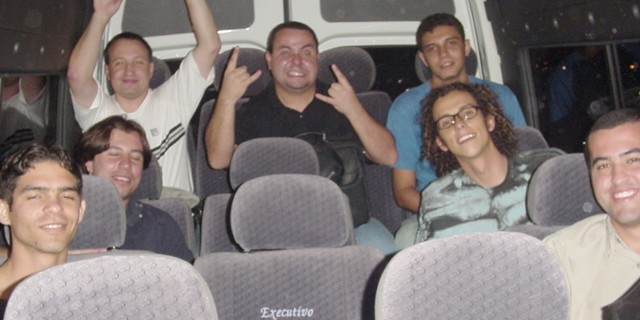
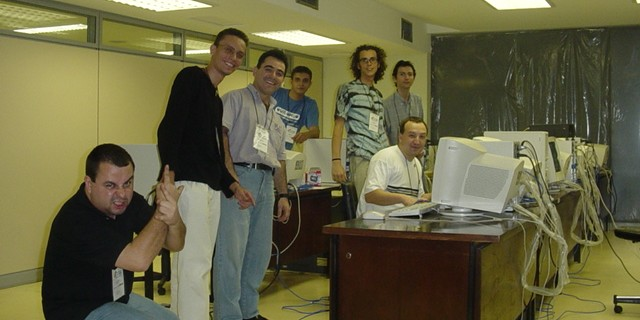
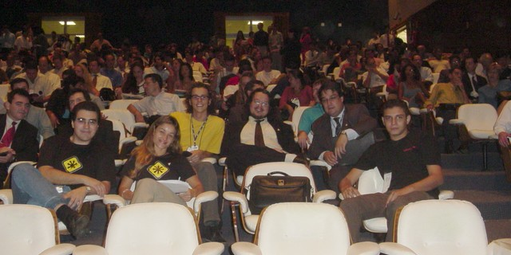
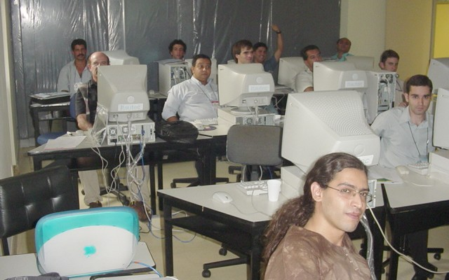
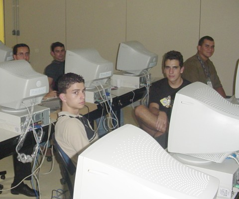
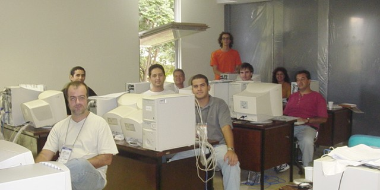
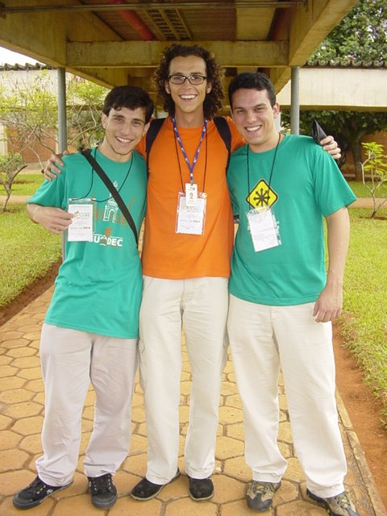
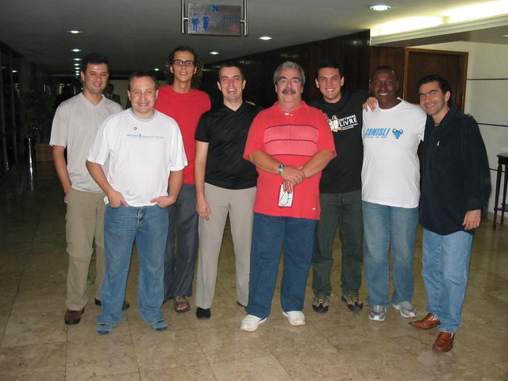
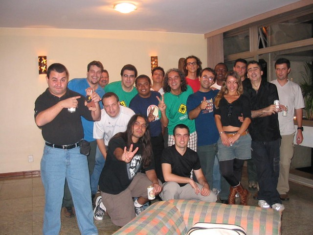
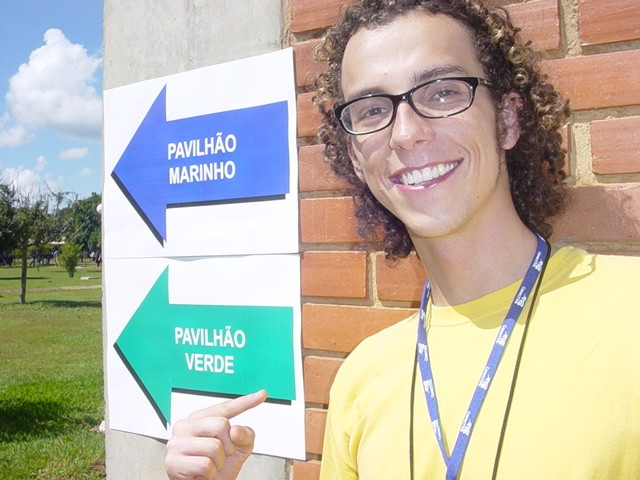

Numa atitude inédita e grandiosa, o governo federal montou um mega esquema de treinamento em Linux para os funcionários públicos, reunindo em Brasília mais de 100 instrutores de todo o país. Os números falam em mais de 2.000 alunos, que durante uma semana assistiram desde cursos básicos até treinamentos avançados em programação e servidores.
Para mim foi uma honra participar de um evento tão importante, e ainda reencontrar amigos que moram longe e que só vejo nessas viagens de treinamento, além das novas amizades.
Ministrei quatro cursos em três dias, foi corrido e cansativo, mas valeu a pena!
Meus agradecimentos ao Carlos Cecconi e toda a sua equipe pela oportunidade, presteza e apoio. Agradecimentos também à Conectiva por ter me liberado para viajar e participar do evento.
A Viagem de Ida
Domingão, dia de sol em Curitiba. De malas prontas, às 15:30 começou a minha jornada, com o táxi até a Rodoferroviária. Lá encontrei o amigo e colega de trabalho Helio Chissini de Castro, o Sr. Dr. "Contato Oficial do KDE na América do Sul" :) Pegamos então o ônibus que vai até o aeroporto, check-in, embarque e finalmente às 17:40 o avião decolou.
Com a conexão demorada em São Paulo, só chegamos em Brasília perto das 21:00, totalizando quase 4 horas de viagem! Chegando lá, desembarque, espera das malas e encontramos o motorista da van que estava nos esperando. Alguns amigos já tinham chegado, e fomos conversando num clima de festa enquanto a van percorria seu longo caminho até o hotel.
 Galera na van, recém-chegada em Brasília
A Chegada (Ou Seria Ralada? :)
Chegando no Hotel Nacional, nem descemos da van. Apenas descarregaram as malas e já fomos direto para a Universidade dos Correios, local onde os cursos iam ser ministrados. Eu estava cansado e com fome, doido para chegar no hotel e deitar, mas os planos acabaram mudando um pouquinho.
Com previsão inicial de 1.000 alunos, o número inchou para 2.200 inscritos até a data do evento. Como os laboratórios não foram dimensionados para tantas pessoas, mais máquinas e salas precisavam ser montadas. Cerca de 20, 30 instrutores estavam lá e os organizadores expuseram o problema, pedindo a colaboração de todos para preparar mais salas para o dia seguinte. Limpeza, arrumação de mesas e cadeiras, instalação do Linux, tudo precisava ser feito.
 Robôs instaladores de máquinas, às 02:45 da madrugada
Todos sem exceção arregaçaram as mangas e com um intervalo para devorar sfihas do Habib's à meia-noite, seguimos aprontando os laboratórios até às 3 da manhã!
Mais passeio de van e a tão desejada chegada no hotel aconteceu. Aleluia irmãos. Eu e o Helio dividimos o quarto 332.
A Abertura do Evento
Após preciosíssimas 3 horas de sono, acordamos às 6 e meia da manhã, café no hotel e van novamente para ir até o evento. Zumbis por todos os lados, só faltou ouvir os gemidos de "Miolos! Miolos!" :)
Mais tarde, perto das 9 da manhã estávamos no auditório, para a cerimônia de abertura, que contou com a participação do Ministro José Dirceu. Outras figuras importantes compunham a mesa de oratória, e após todos terem dito suas falas, os cursos começaram.

Ministro José Dirceu, Senadora Serys, ITI, Serpro, Anatel, Correios, UnB, ...
26.Abr.2004 ::: O Editor VI
Com o início atrasado por causa da cerimônia de abertura, o curso de VI não durou as 4 horas previstas, indo das 11 às 14 horas. Eram 15 alunos, alguns poucos já tinham usado o VI, mas a maioria não.
Indo bem devagar, foi visto o básico. Depois fiz uma demonstração das características sexys do Vim, como ver as diferenças entre dois arquivos com destaque em cores, folding, edição de colunas (vertical) e gravação de comandos. Aí eles realmente gostaram do VI :)
Infelizmente me esqueci de tirar foto com a turma :/
26.Abr.2004 ::: Expressões Regulares
Após uma rápida pausa para meu almoço, às 14:40 começou o curso da tarde, de Expressões Regulares. Foi na mesma sala do curso matutino, porém o calor aumentou e castigou a todos.
No início, perguntei à turma de 15 pessoas quem já tinha conhecia as expressões, ninguém levantou a mão. Para minha surpresa, no final da tarde o pessoal estava lá discutindo uma expressão de duas linhas para casar um IP válido!
Foi muito gratificante, eles realmente aprenderam.

 Turma do curso de Expressões Regulares
27.Abr.2004 ::: Python Básico
A terça-feira era meu dia de folga, então aproveitei o ônibus do evento para ir conhecer a UnB, a Universidade de Brasília, o outro local onde alguns cursos foram ministrados.
Fui lá junto com o Hélio, mas logo que chegamos, tocou o celular dele e avisaram que o instrutor do curso de Python havia faltado. Resultado: voltamos para a Universidade dos Correios de táxi para eu dar o curso como instrutor substituto.
Passei o resto da manhã arrumando a sala que estava mal distribuída e desorganizada, e de tarde foi o curso de 4 horas, para 9 alunos.
Foi tudo "na hora" mesmo, sem material nem preparativos. Foi disparado o prompt interativo do Python e aos poucos fui mostrando os tipos de dados, as estruturas e os conceitos básicos da linguagem.
No final vimos até como fazer uma biblioteca importável que ao mesmo tempo é um executável na linha de comando.
Foi legal ter ministrado o curso assim "na loca", só que isso me custou o único dia livre que eu iria ter em Brasília e como resultado não dei uma voltinha sequer na cidade, voltei pra Curitiba sem conhecer NADA....
 Turma do curso de Python
Turma do curso de Python
28.Abr.2004 ::: Introdução ao Shell Script
Meu último dia em Brasília, foi o mais corrido. O dia todo era o curso de Introdução ao Shell Script, de 8 horas.
Com 8 alunos, seguimos vendo o Shell desde o início, pois todos ali eram principiantes. Variáveis, comandos, conceitos, e chegou o almoço. De tarde vimos bastante exercícios, pois sem prática não há como fixar. Se bateram, mas foram progredidndo e fazendo um por um.
 Turma do curso de Shell
A Viagem de Volta
Meu vôo de volta para casa era às 19:40, e como ainda teria que voltar para o Hotel e só depois ir ao aeroporto, tive que sair antes do horário normal de acabar o curso. Estava com a saída combinada para as 17:30, mas 15 minutos antes o Helio veio correndo me avisar que a van já estava esperando!
Tive que arrumar tudo correndo, terminar a aula de Shell antes, e nem tive tempo de me despedir do pessoal. Como em Brasília tudo é longe, mesmo saindo mais de duas horas antes do vôo, quando finalmente chegamos no aeroporto já estavam chamando para embarque no meu aviãozinho. Só correria...
Felizmente voltei direto, sem escalas e menos de duas horas depois já estava pousando em Curitiba.
Aleatoriedades
 Grupo de pagodeiros que apareceu no evento (kov, verde, lucas)
 ???, Helio, Aurelio, Márcio, Julio, Lucas, Ralf, Marcelo
 Festa na casa do Marcelo Branco
 Não precisava, não precisava... Dois pavilhões em minha homenagem! :)